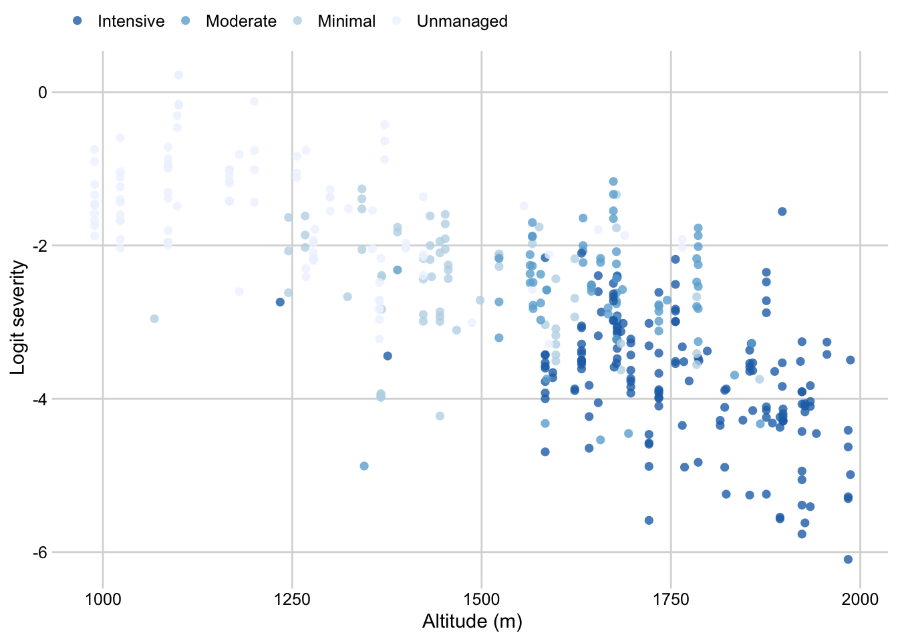
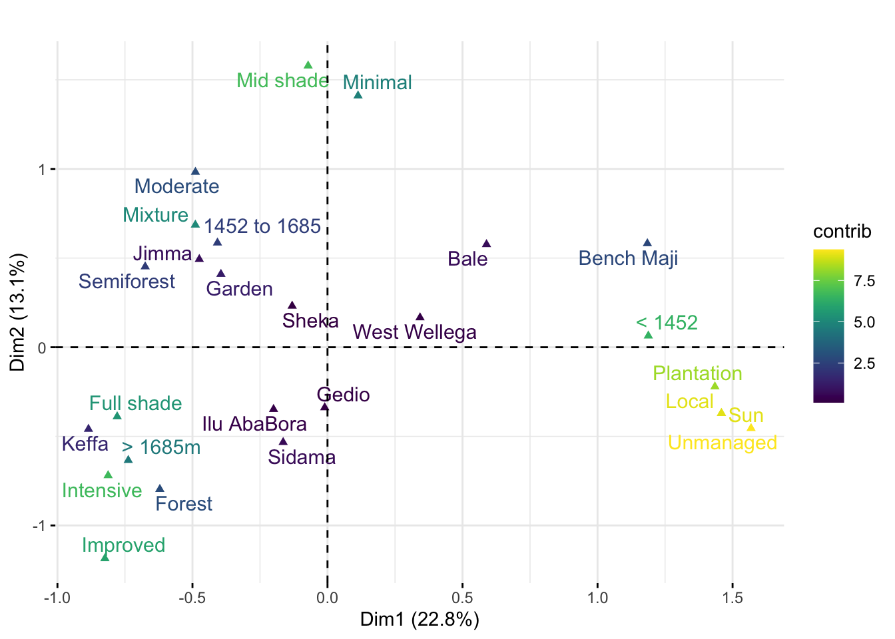

library(rnaturalearth)
library(rnaturalearthhires)
library(sf)## Linking to GEOS 3.7.2, GDAL 2.4.2, PROJ 5.2.0ETH <- ne_countries(
country = "Ethiopia",
returnclass = "sf"
)
region <- sf::st_read("data/ethiopiaregion/Eth_Region_2013.shp")## Reading layer `Eth_Region_2013' from data source `/Users/emersondelponte/Documents/github/paper-coffee-rust-Ethiopia/data/ethiopiaregion/Eth_Region_2013.shp' using driver `ESRI Shapefile'
## Simple feature collection with 11 features and 6 fields
## geometry type: MULTIPOLYGON
## dimension: XY
## bbox: xmin: -162404.5 ymin: 375657.9 xmax: 1491092 ymax: 1641360
## epsg (SRID): 20137
## proj4string: +proj=utm +zone=37 +ellps=clrk80 +towgs84=-166,-15,204,0,0,0,0 +units=m +no_defszone <- sf::st_read("data/ethiopia-zone/Eth_Zone_2013.shp")## Reading layer `Eth_Zone_2013' from data source `/Users/emersondelponte/Documents/github/paper-coffee-rust-Ethiopia/data/ethiopia-zone/Eth_Zone_2013.shp' using driver `ESRI Shapefile'
## Simple feature collection with 74 features and 9 fields
## geometry type: MULTIPOLYGON
## dimension: XY
## bbox: xmin: -162404.5 ymin: 375657.9 xmax: 1491092 ymax: 1641360
## epsg (SRID): 20137
## proj4string: +proj=utm +zone=37 +ellps=clrk80 +towgs84=-166,-15,204,0,0,0,0 +units=m +no_defsdistrict <- sf::st_read("data/ethiopiaworeda/Eth_Woreda_2013.shp")## Reading layer `Eth_Woreda_2013' from data source `/Users/emersondelponte/Documents/github/paper-coffee-rust-Ethiopia/data/ethiopiaworeda/Eth_Woreda_2013.shp' using driver `ESRI Shapefile'
## Simple feature collection with 690 features and 12 fields
## geometry type: MULTIPOLYGON
## dimension: XY
## bbox: xmin: -162404.5 ymin: 375657.9 xmax: 1491092 ymax: 1641360
## epsg (SRID): 20137
## proj4string: +proj=utm +zone=37 +ellps=clrk80 +towgs84=-166,-15,204,0,0,0,0 +units=m +no_defsETH_REGIONS <- region %>%
filter(REGIONNAME %in% c("SNNPR", "Oromia"))
survey$zone <- plyr::revalue(
survey$zone,
c(
"Ilu AbaBora" = "Ilubabor",
"West Welega" = "West Wellega"
)
)## The following `from` values were not present in `x`: West Welegazone_names <- survey %>%
select(zone) %>%
unique()
ETH_ZONE <- zone %>%
filter(ZONENAME %in% c(
"Jimma",
"West Wellega",
"Sidama",
"Sheka",
"Keffa",
"Bench Maji",
"Bale",
"Gedio",
"Ilubabor"
))
district_names <- survey %>%
select(district) %>%
unique()
survey$district <- plyr::revalue(survey$district, c(
"Aira" = "Ayira",
"Aletawondo" = "Aleta Wendo",
"Anderecha" = "Anderacha",
"Debub B" = "Debub Bench",
"Delo-Menna" = "Mena",
"Di/Zuria" = "Dila Zuria",
"Gurafarda" = "Gurafereda",
"Harena" = "Harena Buluk",
"Mettu" = "Metu Zuria",
"Shebe-Sombo" = "Shebe Sambo",
"Shebedino" = "Shebe Dino",
"Sheko" = "Sheka",
"Wonago" = "Wenago",
"Y/chefe" = "Yirgachefe",
"Yayo" = "Yayu",
"Gomma" = "Goma"
))## The following `from` values were not present in `x`: Aira, Aletawondo, Anderecha, Debub B, Delo-Menna, Di/Zuria, Gurafarda, Harena, Mettu, Shebe-Sombo, Wonago, Y/chefedistrict_names <- district_names$district
ETH_DISTRICTS <- district %>%
filter(WOREDANAME %in% district_names)survey <- read_csv("data/survey_clean.csv")p_inc_alt_zone <- survey %>%
ggplot(aes(altitude, logit(inc/100), color = zone, group = zone)) +
geom_point() +
geom_smooth(method = lm, se = F) +
theme_minimal_grid(font_size = 10) +
theme(legend.position = "none") +
scale_color_brewer(type = "qual", palette = "Set3")+
labs(x = "Altitude (m)", y = "Logit Incidence (proportion)")p_sev_alt_zone <- survey %>%
ggplot(aes(altitude, logit(sev2/100), color = zone, group = zone)) +
geom_point() +
geom_smooth(method = lm, se = F) +
theme_minimal_grid(font_size = 10) +
theme(legend.position = "none") +
scale_color_brewer(type = "qual", palette = "Set3")+
labs(x = "Altitude (m)", y = "Logit Severity (Proportion)")m_alt_inc_zone <- lmer(logit(inc/100 ) ~ altitude * zone + (1 | district), survey, REML = F)
summary(m_alt_inc_zone)## Linear mixed model fit by maximum likelihood ['lmerMod']
## Formula: logit(inc/100) ~ altitude * zone + (1 | district)
## Data: survey
##
## AIC BIC logLik deviance df.resid
## 554.9 635.0 -257.5 514.9 385
##
## Scaled residuals:
## Min 1Q Median 3Q Max
## -3.2089 -0.5685 -0.0957 0.4815 4.6792
##
## Random effects:
## Groups Name Variance Std.Dev.
## district (Intercept) 0.04227 0.2056
## Residual 0.18930 0.4351
## Number of obs: 405, groups: district, 27
##
## Fixed effects:
## Estimate Std. Error t value
## (Intercept) 0.8510927 0.7852840 1.084
## altitude -0.0007735 0.0005239 -1.476
## zoneBench Maji 2.4348759 0.8922217 2.729
## zoneGedio 2.6106598 1.0325223 2.528
## zoneIlu AbaBora 3.1041604 1.0420872 2.979
## zoneJimma 2.4720684 1.2604894 1.961
## zoneKeffa 0.8145031 1.5454408 0.527
## zoneSheka 3.0386799 1.0261993 2.961
## zoneSidama 0.8533550 0.9156850 0.932
## zoneWest Wellega 1.5087211 0.9871541 1.528
## altitude:zoneBench Maji -0.0017946 0.0006112 -2.936
## altitude:zoneGedio -0.0020325 0.0006646 -3.058
## altitude:zoneIlu AbaBora -0.0021065 0.0006648 -3.168
## altitude:zoneJimma -0.0016930 0.0007826 -2.163
## altitude:zoneKeffa -0.0008470 0.0009272 -0.914
## altitude:zoneSheka -0.0019962 0.0006671 -2.992
## altitude:zoneSidama -0.0010900 0.0006004 -1.815
## altitude:zoneWest Wellega -0.0010655 0.0006509 -1.637##
## Correlation matrix not shown by default, as p = 18 > 12.
## Use print(x, correlation=TRUE) or
## vcov(x) if you need itAnova(m_alt_inc_zone, type = "III")zone_alt_inc <- data.frame(emtrends(m_alt_inc_zone, pairwise ~ zone, var = "altitude" ))## Warning in (function (..., row.names = NULL, check.rows = FALSE, check.names =
## TRUE, : row names were found from a short variable and have been discardedp_slopes_inc_alt_zone <- zone_alt_inc %>%
ggplot(aes(reorder(emtrends.zone, emtrends.altitude.trend),emtrends.altitude.trend, color = emtrends.zone))+
geom_point(size =3)+
coord_flip()+
theme_minimal_vgrid(font_size = 11)+
theme(legend.position = "none")+
scale_color_brewer(type = "qual", palette = "Set3")+
labs(x = "", y = "Slope estimates")+
geom_errorbar(aes(ymin = emtrends.lower.CL, ymax = emtrends.upper.CL),
width =0.2, size =1)m_alt_sev_zone <- lmer(logit(sev2 ) ~ altitude * zone + (1 | district), data = survey, REML = F)
Anova(m_alt_sev_zone)zone_alt_sev <- data.frame(emtrends(m_alt_sev_zone, pairwise ~ zone, var = "altitude" ))## Warning in (function (..., row.names = NULL, check.rows = FALSE, check.names =
## TRUE, : row names were found from a short variable and have been discardedp_slopes_sev_alt_zone <- zone_alt_sev %>%
ggplot(aes(reorder(emtrends.zone, emtrends.altitude.trend),emtrends.altitude.trend, color = emtrends.zone))+
geom_point(size =3)+
coord_flip()+
theme_minimal_vgrid(font_size = 11)+
theme(legend.position = "none")+
scale_color_brewer(type = "qual", palette = "Set3")+
labs(x = "", y = "Slope estimates")+
geom_errorbar(aes(ymin = emtrends.lower.CL, ymax = emtrends.upper.CL),
width =0.2, size =1)((p_inc_alt_zone / p_sev_alt_zone ) | (p_slopes_inc_alt_zone / p_slopes_sev_alt_zone)) +
plot_annotation(tag_levels = "A") ## `geom_smooth()` using formula 'y ~ x'
## `geom_smooth()` using formula 'y ~ x' ggsave("figs/Figure3.png", width = 8, height = 7)## `geom_smooth()` using formula 'y ~ x'
## `geom_smooth()` using formula 'y ~ x'survey$cropping_system <- factor(survey$cropping_system, levels = c("Forest", "Semiforest", "Garden", "Plantation"))
csystem <- survey %>%
tabyl(zone, cropping_system) %>%
gather(cropping_system, name, 2:5)
csystem$cropping_system <- factor(csystem$cropping_system, levels = c("Forest", "Semiforest", "Garden", "Plantation"))
p_cropping <- csystem %>%
ggplot(aes(zone, name, fill = cropping_system))+
geom_col(position = "fill", color = "black", size =0.3)+
theme(legend.position = "none",
axis.text.x = element_text(angle = 45, hjust = 1))+
labs(fill = "",
x = "",
y = "Proportion")+
scale_fill_brewer(palette = "Greens", direction = -1)
p_croppingsurvey$cropping_system <- factor(survey$cropping_system, levels = c("Forest", "Semiforest", "Garden", "Plantation"))
p_cropping_altitude <- survey %>%
dplyr::select(altitude, cropping_system, inc, sev2) %>%
ggplot(aes(altitude, sev2, color = cropping_system, group = cropping_system))+
geom_point(size = 3, shape = 16)+
# geom_smooth(method = "lm", se = F )+
theme_minimal_grid(font_size=11)+
theme(legend.position = "top")+
labs(color = "",
x = "Altitude (m)",
y = "Severity (%)")+
scale_color_brewer(palette = "Greens", direction = -1)
p_cropping_altitudefarm_man <- survey %>%
tabyl(zone, farm_management) %>%
gather(farm_management, name, 2:5)
farm_man$farm_management <- factor(
farm_man$farm_management, levels = c("Intensive", "Moderate", "Minimal", "Unmanaged"))
p_farm <- farm_man %>%
ggplot(aes(zone, name, fill = farm_management))+
geom_col(position = "fill", color = "black", size =0.3)+
theme(legend.position = "none",
axis.text.x = element_text(angle = 45, hjust = 1))+
labs(fill = "",
x = "",
y = "Proportion")+
scale_fill_brewer(palette = "Blues", direction = -1)survey$farm_management <- factor(
survey$farm_management, levels = c("Intensive", "Moderate", "Minimal", "Unmanaged"))
p_farm_man_altitude <- survey %>%
dplyr::select(altitude, farm_management, inc, sev2) %>%
ggplot(aes(altitude, sev2, color = farm_management, group = farm_management))+
geom_point(size = 3, shape = 16)+
# geom_smooth(method = "lm", se = F )+
theme_minimal_grid(font_size=11)+
theme(legend.position = "top")+
labs(color = "",
x = "Altitude (m)",
y = "Severity (%)")+
scale_color_brewer(palette = "Blues", direction = -1)
p_farm_man_altitude
library(janitor)
survey_shade <- survey %>%
tabyl(zone, shade) %>%
gather(shade, name, 2:4)
survey_shade$shade <- factor(
survey_shade$shade, levels = c("Full shade", "Mid shade", "Sun"))
p_shade <- survey_shade %>%
ggplot(aes(zone, name, fill = shade))+
geom_col(position = "fill", color = "black", size =0.3)+
theme(legend.position = "none",
axis.text.x = element_text(angle = 45, hjust = 1))+
labs(fill = "",
x = "",
y = "Proportion")+
scale_fill_brewer(palette = "OrRd", direction = 1)
p_shadesurvey$shade <- factor(
survey$shade, levels = c("Full shade", "Mid shade", "Sun"))
p_shade_altitude <- survey %>%
dplyr::select(altitude, shade, inc, sev2) %>%
ggplot(aes(altitude, sev2, color = shade, group = shade))+
geom_point(size = 3, shape = 16)+
# geom_smooth(method = "lm", se = F )+
theme_minimal_grid(font_size=11)+
theme(legend.position = "top")+
labs(color = "",
x = "Altitude (m)",
y = "Severity (%)")+
scale_color_brewer(palette = "OrRd", direction = 1)
p_shade_altitudesurvey_cult <-survey %>%
tabyl(zone, cultivar) %>%
gather(cultivar, name, 2:4)
survey_cult$cultivar <- factor(
survey_cult$cultivar, levels = c("Improved", "Mixture", "Local", "Unmanaged"))
p_cult <- survey_cult %>%
ggplot(aes(zone, name, fill = cultivar))+
geom_col(position = "fill", color = "black", size =0.3)+
theme(legend.position = "none",
axis.text.x = element_text(angle = 45, hjust = 1))+
labs(fill = "",
x = "",
y = "Proportion")+
scale_fill_brewer(palette = "PuRd", direction = -1)
p_cultsurvey$cultivar <- factor(
survey$cultivar, levels = c("Improved", "Mixture", "Local", "Unmanaged"))
p_cult_altitude <- survey %>%
dplyr::select(altitude, cultivar, inc, sev2) %>%
ggplot(aes(altitude, sev2, color = cultivar, group = cultivar))+
geom_point(size = 3, shape = 16)+
# geom_smooth(method = "lm", se = F )+
theme_minimal_grid(font_size=11)+
theme(legend.position = "top")+
labs(color = "",
x = "Altitude (m)",
y = "Severity (%)")+
scale_color_brewer(palette = "PuRd", direction = -1)
p_cult_altitudelibrary(patchwork)
((p_cropping_altitude / p_cult_altitude / p_farm_man_altitude / p_shade_altitude) |
((p_cropping / p_cult /p_farm / p_shade ) ))+
plot_annotation(tag_levels = 'A') ggsave("figs/Figure4.png", width =8, height =10)(p_cropping_altitude / p_cult_altitude / p_farm_man_altitude / p_shade_altitude))+
library(FactoMineR)
library(factoextra)## Welcome! Related Books: `Practical Guide To Cluster Analysis in R` at https://goo.gl/13EFCZsurvey_mca <- survey %>%
mutate(altitude2 = case_when(
altitude < 1452 ~ "< 1452",
altitude < 1685 ~ "1452 to 1685",
TRUE ~ "> 1685m"
))
attach(survey_mca)## The following objects are masked _by_ .GlobalEnv:
##
## district, region, zonedata_mca <- survey_mca %>% dplyr::select(altitude2, zone, cultivar, shade, cropping_system, farm_management)
head(data_mca)cats <- apply(data_mca, 2, function(x) nlevels(as.factor(x))) # enumera as categorias
cats## altitude2 zone cultivar shade cropping_system
## 3 9 3 3 4
## farm_management
## 4res.mca <- MCA(data_mca, graph = FALSE)
p <- fviz_mca_var(res.mca,
label = "var", repel = T,
col.var = "contrib",
# Avoid text overlapping (slow if many point)
ggtheme = theme_minimal()
)
p + scale_color_viridis() +
labs (title = "", fill = "Contribution")+
ggsave("figs/Figure5.png", width =7, height =5)